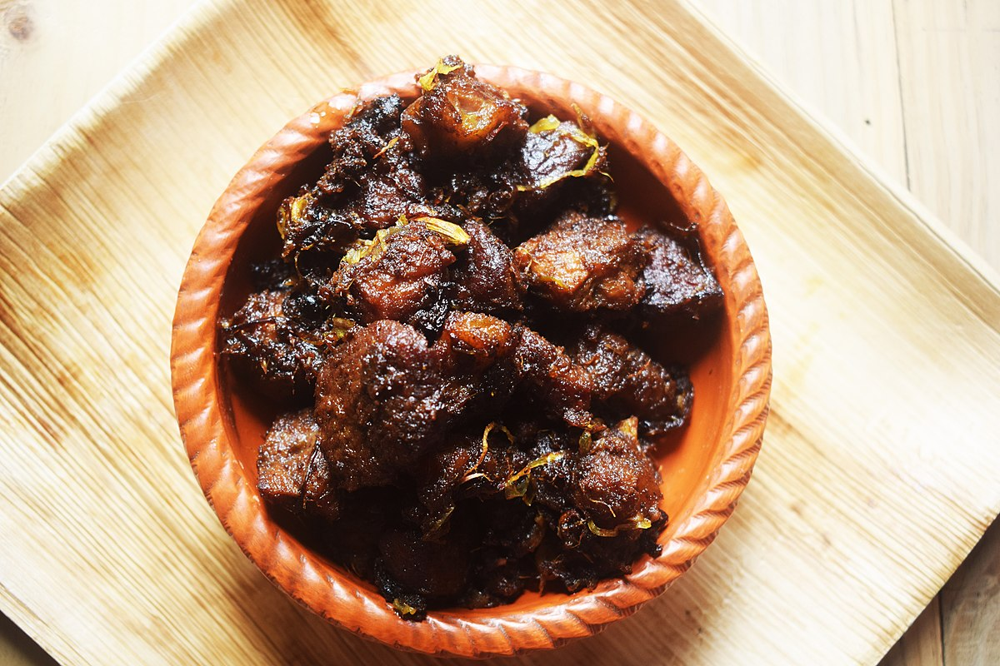

Home
Khala Bhuna

Description
Khala Bhuna is a rich and flavorful beef dish from Bangladesh, known for its deep, aromatic spices and slow-cooked tenderness. This traditional delicacy is made by marinating beef with a blend of spices, including garlic, ginger, onions, chili, and garam masala, then slow-cooking it until the meat becomes soft and infused with the robust flavors. The dish is characterized by its thick, dark, and caramelized gravy, achieved through prolonged cooking and frequent stirring. Often enjoyed with paratha, naan, or plain rice, Khala Bhuna is a beloved dish, especially during special occasions and festive gatherings. Its intense, smoky taste and melt-in-your-mouth texture make it a favorite among meat lovers.
Ingredient
Main Ingredients
- 1 kg beef (preferably with some fat)
- ½ cup mustard oil or ghee
- 2 large onions (thinly sliced)
- 2 tbsp ginger paste
- 2 tbsp garlic paste
- 2 tsp red chili powder (adjust to taste)
- 1 tsp turmeric powder
- 2 tsp cumin powder
- 2 tsp coriander powder
- 1 tsp garam masala powder
- 1 tsp black pepper powder
- 1 cup yogurt (optional, for tenderness)
- 2-3 green chilies (sliced)
- 2 bay leaves
- 3-4 cardamoms
- 3-4 cloves
- 1 cinnamon stick
- 1 tsp salt (or to taste)
- 1 tbsp sugar (for slight caramelization)
- 1 cup water (as needed)
For Garnishing
- Fried onions (beresta)
- Chopped coriander leaves
- Sliced green chilies
Steps to Cook Khala Bhuna
-
Marinate the Beef
- In a large bowl, mix the beef with ginger paste, garlic paste, red chili powder, turmeric powder, cumin powder, coriander powder, garam masala, black pepper, yogurt (if using), and salt.
- Let it marinate for at least 1-2 hours (overnight for best results) to allow the spices to infuse into the meat.
-
Prepare the Base
- Heat mustard oil or ghee in a deep pan or wok over medium heat until hot.
- Add bay leaves, cardamoms, cloves, and cinnamon stick. Sauté for a few seconds until aromatic.
- Add thinly sliced onions and fry until they turn golden brown.
- Add sugar and stir to caramelize slightly, enhancing the rich color of the dish.
-
Cook the Beef
- Add the marinated beef to the pan and cook on medium-high heat for about 15-20 minutes, stirring occasionally until the meat releases water.
- Lower the heat and cover the pan. Let it cook slowly for 1.5 to 2 hours, stirring every 10-15 minutes. The beef will cook in its own juices, intensifying the flavor.
- If needed, add a small amount of warm water to prevent burning, but keep the consistency thick and dry.
-
Final Touches
- When the beef is tender and the oil starts to separate, add green chilies and mix well.
- Taste and adjust salt and spice levels if needed.
-
Serve & Enjoy
- Garnish with fried onions (beresta) and fresh coriander leaves.
- Serve hot with paratha, naan, or plain rice.